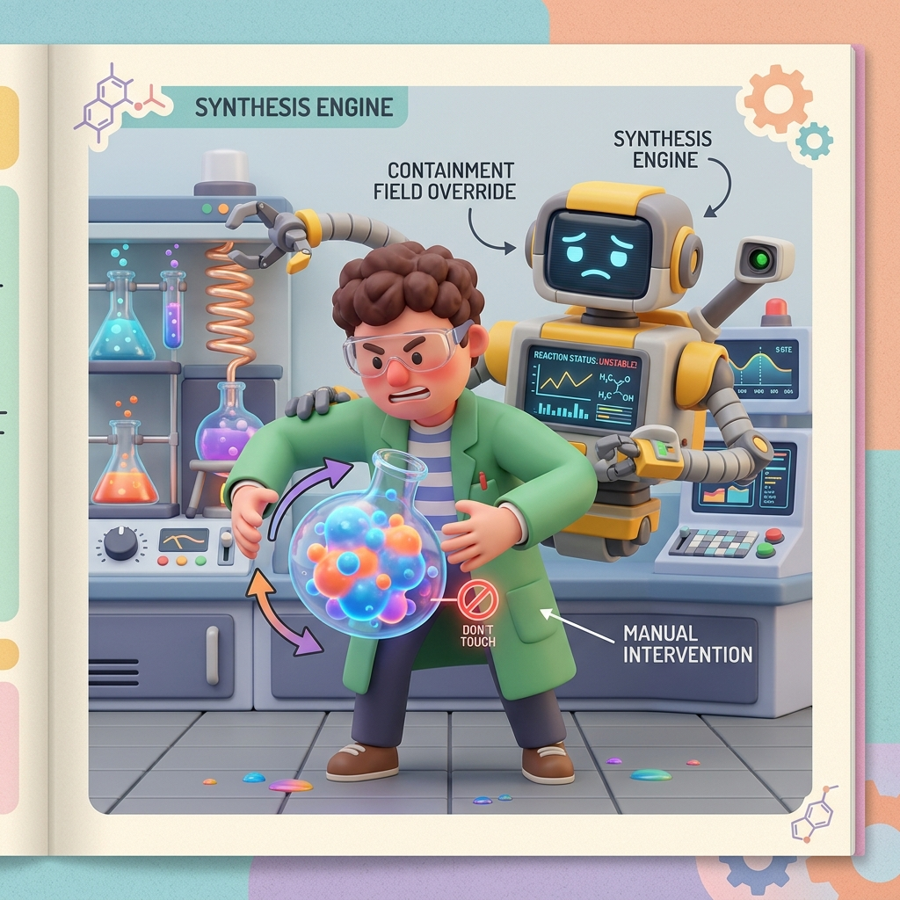

Section 4.1: Synthesis Strategies: The Alchemist's Forge
Synthesis is the moment of truth. It’s where your beautiful, abstract HDL code is melted down and forged into a physical netlist of gates, lookup tables (LUTs), and flip-flops. In the AMD UltraFast Methodology, synthesis is not just a push-button process; it’s an alchemical art. If you give the synthesis engine the right "ingredients" (attributes and settings), you’ll get a design that is fast and efficient. Give it the wrong ones, and you’ll end up with a mess of "logic sludge" that will never meet timing.
The Alchemist's forge: Transforming Logic
The goal of synthesis is to find the best physical implementation for your logic. Vivado has several "Strategies" you can choose from. Most people start with the Default strategy, which is a good balance of speed and area. But if you’re pushing the limits of your FPGA, you might need to use Flow_PerfOptimized_high or Flow_AreaOptimized_high.
Think of these strategies like different recipes. One might focus on making the logic as fast as possible by adding extra registers (Pipelining), while another might focus on making it as small as possible by sharing resources. Choosing the right strategy early on can save you hours of implementation time later.
Brain Power If you use a "Performance Optimized" strategy, will your design use more or fewer LUTs than the "Area Optimized" version? Why might a "Performance Optimized" design actually be easier to route?
The DONT_TOUCH Trap: Letting the Tools Work
A common mistake for experienced designers is using the DONT_TOUCH attribute on everything. They think they know better than the tool, so they "lock" their signals to prevent the synthesis engine from optimizing them. In the AMD UltraFast world, this is a dangerous game.
DONT_TOUCH prevents the tool from performing "Logic Optimization." If the tool sees two identical pieces of logic, it can't merge them. If it sees a signal that is constant, it can't remove it. This creates "Optimization Debt" that clogs up the routing engine. Use DONT_TOUCH sparingly, and only when you have a very specific reason to keep a signal alive (like for an ILA probe).

Fireside Chat: The RTL Coder and the Synthesis Expert
RTL Coder: "My synthesis report says I'm using 80% of the LUTs on the chip! I haven't even added the PCIe core yet. What happened?"
Synthesis Expert: "Let me see your resets. Ah, here it is. You’re resetting every single counter and register in your data path. Because of those resets, the synthesis engine can't use the dedicated SRL16 resources. It’s building everything out of LUTs and flip-flops."
RTL Coder: "But I need those resets! What if the system glitches?"
Synthesis Expert: "You only need to reset the control logic. Let the data path be uninitialized. If you remove those unnecessary resets, the synthesis engine can pack your logic into Shift Register LUTs (SRLs). You’ll drop from 80% utilization to 20% in five minutes. Stop being a 'reset-happy' coder and start being a hardware architect."
Control Set Optimization: Packing the Slices
AMD FPGAs organize flip-flops into groups called Slices. To fit into a slice, flip-flops must share the same Control Set (Clock, Reset, and Clock Enable). If your code has a chaotic mix of different resets and enables, the synthesis engine has to scatter your flip-flops across multiple slices, which wastes space and creates long wires.
The UltraFast methodology recommends Control Set Reduction. By minimizing the number of unique resets and enables, you allow the tools to pack your logic tightly. Think of it like packing a suitcase. If everything is the same shape, it’s easy. If everything is a different shape, you’re going to have a lot of wasted space.
Timing-Driven Synthesis: The Critical Path
Vivado is a Timing-Driven tool. It looks at your XDC constraints (which we discussed in Chapter 2) and prioritizes the logic paths that are closest to failing their timing requirements. If a path has plenty of "slack," the tool will optimize it for area. If a path is "tight," the tool will pull out all the stops to make it fast.
This is why accurate constraints are so important. If you tell the tool that a 100MHz clock is actually 500MHz, the synthesis engine will waste all its energy trying to make that logic super-fast, potentially ruining the timing for the rest of your design. Be honest with the tools, and they will be honest with you.
Code Detective: The Flattening Mystery
By default, Vivado maintains your design's hierarchy. But you can tell it to "Flatten" the design using the -flatten_hierarchy setting.
# Code Detective: Why might 'rebuilt' flattening be better than 'full'?
synth_design -top top_module -part xcku040-ffva1156-2-e -flatten_hierarchy full
# Hint: What happens to your signal names when you use 'full' flattening?
The flaw with full flattening is that it destroys your hierarchy and renames your signals to random strings of characters. This makes it impossible to debug using an ILA. The rebuilt setting is often a better choice—it allows the synthesis engine to optimize across hierarchical boundaries but "rebuilds" the hierarchy at the end so you can still find your signals.
There is a second cost that matters more than debug convenience: flattened designs lose
the hierarchy that the placer and report_utilization -hierarchical reason about. You
give up the ability to answer "which module is burning the LUTs?" and you give up
KEEP_HIERARCHY as a floorplanning lever, in exchange for optimisation across boundaries
that rebuilt gives you anyway.
The fix:
# Corrected: cross-boundary optimisation without losing your names.
synth_design -top top_module -part xcku040-ffva1156-2-e \
-flatten_hierarchy rebuilt \
-directive Default
# Then keep the boundaries you specifically need for debug or floorplanning.
# KEEP_HIERARCHY blocks optimisation ACROSS that boundary, so use it deliberately:
# - on a module you intend to pblock
# - on a module you intend to probe with an ILA
# - on a module you have characterised and do not want re-optimised
# and not as a blanket setting, or you will block the merging that saves you area.
set_property KEEP_HIERARCHY SOFT [get_cells u_dsp_pipeline]
# Verify you kept what you meant to keep:
report_utilization -hierarchical -hierarchical_depth 3 -file util_hier.rpt
KEEP_HIERARCHY SOFT is the useful middle setting: the boundary survives synthesis for
reporting and constraint purposes, but implementation may still optimise through it. TRUE
is the hard version, and it costs real QoR — measure before you reach for it.
Analogy → Silicon
| In the story | In the silicon | Where the analogy breaks |
|---|---|---|
| The alchemist's forge | synth_design mapping RTL onto LUT6, FDRE, CARRY8, DSP48E2, RAMB36E2 |
Alchemy is opaque; synthesis publishes its reasoning in the log and in report_qor_suggestions, and reading it is the skill |
| Different recipes | -directive values: Default, PerformanceOptimized_high, AreaOptimized_high, RuntimeOptimized |
Recipes give predictably different dishes; directives are heuristics, and a "performance" directive can produce worse QoR on your specific design — you must measure |
| Locking the ingredients | DONT_TOUCH / KEEP / MARK_DEBUG |
Locking one ingredient is local; DONT_TOUCH blocks optimisation through the object, so it propagates outward and can cost far more than the object itself |
| Packing a suitcase | Control set reduction and CLB packing | Suitcase items compress; control sets are exact — see the arithmetic in Section 3.1 |
| Being honest with the tools | Timing-driven synthesis using your XDC to prioritise | Honesty is binary; over-constraining is a specific failure mode where the tool optimises the wrong paths and starves the real ones |
Do the Math
Synthesis decisions are a resource trade you can compute rather than guess.
What over-constraining actually costs
Timing-driven synthesis allocates effort in proportion to how close a path is to failing. Suppose your design has a genuine 100 MHz control domain and a 400 MHz datapath, and someone constrains the control clock at 400 MHz "for margin."
Givens:
| Quantity | Value |
|---|---|
| Control domain flops | 20,000 |
| Datapath flops | 60,000 |
| Real control requirement | 10.000 ns |
| Constrained as | 2.500 ns |
The control logic now appears to need a 4× speed-up it does not need. Synthesis responds by replicating high-fanout drivers, unpacking control sets to shorten paths, and duplicating logic — all of which cost area:
And that effort comes out of the datapath's budget, which is where you actually needed it. The observable symptoms are characteristic: utilisation climbs, runtime climbs, congestion appears in a region that was previously fine, and the datapath's WNS gets worse after you tightened an unrelated constraint. Over-constraining is not free margin; it is a reallocation of a fixed effort budget away from the paths that matter.
Directive sweeps: what they cost and what they are worth
Givens:
| Quantity | Value |
|---|---|
| Synthesis runtime | 25 minutes |
| Implementation runtime | 3 hours |
| Directives worth trying | 4 synth × 5 impl |
A full cross product is \(4 \times 5 = 20\) runs:
Nearly three days of machine time — feasible on a build farm, absurd on a laptop, and in either case worth doing only after you know what is failing. A directive sweep is a search over heuristics; if your problem is 11 levels of logic on a path, no heuristic will fix it and you have spent three days confirming that.
The disciplined order:
- Diagnose with
report_design_analysisandreport_qor_suggestions— minutes. - Fix what the diagnosis names: pipelining, fanout, control sets, floorplan — hours, and it usually moves WNS by hundreds of picoseconds.
- Then sweep directives to recover the last tens of picoseconds — days, for a payoff measured in tens of picoseconds.
Doing this in reverse order is the single most common way to waste a week of timing closure.
The Real Artifact
A synthesis script that records why each setting is there, plus the reports that tell you whether it worked. Scripts without this commentary become cargo cult within one project handover.
#==============================================================================
# synth.tcl - synthesis with reasons attached.
#
# Rule of the file: every non-default setting carries a comment saying what
# measurement motivated it. A setting whose justification nobody remembers is
# a setting that gets copied into the next project and slowly makes it worse.
#==============================================================================
set part xcku040-ffva1156-2-e
set top top_module
set build_dir ./build
#------------------------------------------------------------------------------
# 1. SYNTHESIS
#
# -flatten_hierarchy rebuilt : optimise across boundaries, keep the names.
# Never 'full' - you lose ILA probing and
# hierarchical utilisation reporting.
# -directive : start at Default. Only change it once
# report_qor_suggestions says the bottleneck is
# something a directive addresses.
# -retiming : lets synthesis move registers across logic to
# balance stages. Cheap win on pipelined datapaths;
# it does NOT add registers, only relocates them.
#------------------------------------------------------------------------------
synth_design -top $top -part $part \
-flatten_hierarchy rebuilt \
-directive Default \
-retiming
write_checkpoint -force $build_dir/post_synth.dcp
#------------------------------------------------------------------------------
# 2. THE FOUR REPORTS THAT DIAGNOSE SYNTHESIS QoR
# Read them in this order. Each answers a different question.
#------------------------------------------------------------------------------
# Q: Did I get the hard blocks I expected, and which module burned the fabric?
report_utilization -hierarchical -hierarchical_depth 3 \
-file $build_dir/util_hier.rpt
# Q: Is my control set count sane? (See Section 3.1 for the arithmetic.)
# The summary at the top is the number to track release over release.
report_control_sets -verbose -file $build_dir/control_sets.rpt
# Q: What does Vivado itself think is wrong, and what would it do?
# This is the highest-value report in the flow and the least used. It names
# specific cells and specific fixes, and it can emit machine-readable
# suggestions that implementation will act on.
report_qor_suggestions -file $build_dir/qor_suggestions.rpt
write_qor_suggestions -force $build_dir/qor.rqs
# Q: Am I about to fight congestion or complexity?
report_design_analysis -complexity -congestion \
-file $build_dir/design_analysis.rpt
#------------------------------------------------------------------------------
# 3. ATTRIBUTE HYGIENE
# Audit these every release. DONT_TOUCH accumulates: each one was added for a
# reason that expired, and collectively they strangle optimisation.
#------------------------------------------------------------------------------
proc audit_optimization_blockers {} {
set report {}
foreach attr {DONT_TOUCH KEEP KEEP_HIERARCHY MARK_DEBUG} {
set cells [get_cells -hier -quiet -filter "$attr"]
set nets [get_nets -hier -quiet -filter "$attr"]
set n [expr {[llength $cells] + [llength $nets]}]
if {$n > 0} {
lappend report [format " %-16s %4d object(s)" $attr $n]
}
}
if {[llength $report]} {
puts "Optimisation blockers present:"
puts [join $report "\n"]
puts "Each one blocks merging, constant propagation and retiming through it."
puts "Justify or remove. MARK_DEBUG in particular must not reach production."
} else {
puts "No optimisation blockers set."
}
}
audit_optimization_blockers
#------------------------------------------------------------------------------
# 4. FEED THE SUGGESTIONS BACK IN
# The .rqs file from step 2 is not documentation - implementation consumes it.
#------------------------------------------------------------------------------
# read_qor_suggestions $build_dir/qor.rqs
# opt_design -directive ExploreWithRemap
Sharpen Your Pencil
report_control_setsreports 3,100 unique control sets against 24,000 flip-flops. Using the CLB model from Section 3.1, estimate the CLB cost versus the ideal, and say what you would look for in the RTL.- Your synthesis run reports 40 % LUT utilisation. After adding
DONT_TOUCHto twelve modules for ILA probing, it reports 58 %. Explain the mechanism, and say what you would do instead. - You have a design failing timing by −0.400 ns with
Logic Levels: 9on the worst paths androute 22 %. You have three days. Allocate them across: directive sweep, RTL pipelining, and floorplanning. Justify the split.
Final Thoughts on the Forge
Synthesis is the bridge between the digital dream and the physical reality. By choosing the right strategies, minimizing DONT_TOUCH attributes, and optimizing your control sets, you give the synthesis engine the freedom it needs to build a world-class design. Respect the forge, and it will give you a design that is strong, lean, and fast.
Answers
Brain Power — Performance-optimized vs area-optimized: more or fewer LUTs? Why might the performance version be easier to route?
More LUTs, usually — and sometimes substantially. Performance-oriented synthesis buys speed with area in three main ways:
- Logic replication. A high-fanout driver is duplicated so each copy serves fewer loads over shorter wires. More LUTs, shorter nets.
- Less resource sharing. Area optimisation will merge two multiplexers that are never used simultaneously into one with extra select logic; performance optimisation leaves them separate because the shared version has a longer path.
- Retiming and restructuring, which can flatten a logic chain into a wider, shallower tree — fewer levels, more LUTs.
Why the larger design can be easier to route: routing difficulty is driven by wire demand in a region, not by LUT count. A replicated driver produces several short local nets instead of one long net crossing the die; a shallower logic tree produces shorter critical paths that the placer can satisfy with local resources. So you can add 8 % LUTs and reduce congestion, because the extra logic is spent buying locality.
The important caveat, and the reason the honest answer is "measure": this stops being true near the top of the device. At 90 % utilisation, extra LUTs mean the placer has nowhere to put the replicas, and performance optimisation makes both area and congestion worse. The directive that helps at 60 % utilisation can be the wrong one at 90 %.
Sharpen Your Pencil #1 — 3,100 control sets, 24,000 flops:
Each control set needs \(\lceil 7.7/8 \rceil = 1\) half-CLB, so:
Ideal: \(24{,}000 / 16 = 1{,}500\) CLBs.
So this design is at 1,550 versus 1,500 — only about 3 % overhead. This one is healthy, and that is the point of the exercise: 3,100 sounds like a large number, and the ratio is what matters, not the absolute count. Do not go refactoring RTL on the basis of a scary-looking total.
If the ratio had been poor (say 4 flops per set), the RTL patterns to look for are per-instance enables from generate loops, per-bit resets, and state machines computing a unique enable expression per destination register.
Sharpen Your Pencil #2 — 40 % → 58 % from twelve DONT_TOUCH attributes.
The mechanism, and it compounds:
- Blocked constant propagation. A
DONT_TOUCHnet whose driver is a constant can no longer be folded away, so all the logic downstream that would have collapsed survives. - Blocked merging. Two identical modules that would have been merged into one now both exist.
- Blocked boundary optimisation. Unused outputs of a
DONT_TOUCHmodule cannot be removed, which keeps alive the entire cone of logic feeding them — this is usually the biggest contributor and the least obvious. - Blocked retiming and control set merging through the marked objects, which costs packing efficiency on top of the raw logic.
Twelve modules is enough for these to interact: logic kept alive in one module feeds another where it also cannot be optimised.
What to do instead: use MARK_DEBUG on the specific nets you want to probe rather
than DONT_TOUCH on whole modules.
MARK_DEBUG preserves the net for debug insertion with far narrower scope than a
module-level DONT_TOUCH. Better still, use the ILA insertion flow on the synthesised
netlist (set_property MARK_DEBUG true [get_nets ...] after synth_design), so the
attributes never touch your source at all and cannot be forgotten before release. And
whatever you use, run the audit_optimization_blockers proc from the artifact each
release — the failure mode is not adding one, it is never removing it.
Sharpen Your Pencil #3 — −0.400 ns, Logic Levels: 9, route 22 %. Three days.
The diagnosis first, because it determines everything: route is only 22 %, so this is a logic-dominated failure. Nine levels is deep. The time budget follows from that:
- Day 1 — RTL pipelining (≈70 % of the effort). Nine levels of logic is the disease;
everything else is symptom management. Find the worst path group with
report_timing -setup -max_paths 50 -path_type summary, identify the shared structure (it is usually one wide comparator, one priority encoder, or one arithmetic expression feeding many endpoints), and split it into two stages. A 9-level path becomes two 4–5-level paths, which at −0.400 ns is very likely all you need. Also trysynth_design -retimingfirst, since it is one flag and it costs one synthesis run. - Day 2 — verify and re-close (≈20 %). Pipelining changes latency, so the protocol around it needs re-verification. This is real work and skipping it is how a timing fix becomes a functional bug. Re-run implementation and confirm the fix held.
- Day 3 — directive sweep, only if still short (≈10 %). Now, and only now, is a sweep worth the machine time, because you are hunting the last tens of picoseconds, which is what directives are actually good for.
Floorplanning gets zero. With route at 22 % of the path, perfect placement recovers at most a fraction of that 22 %, against a 400 ps deficit driven by logic depth. Floorplanning is the right tool for the mirror-image problem (route 78 %, levels 3), and spending a day on it here would be a day spent confirming that.
There Are No Dumb Questions
Q: Should I just try all the directives and keep whichever wins?
A: Eventually, yes — but not first. A sweep is a search over heuristics, and it typically moves WNS by tens of picoseconds. Diagnosis plus a targeted fix typically moves it by hundreds. Sweep when you are close, diagnose when you are not. The arithmetic in Do the Math shows a full cross product costs nearly three days of machine time; spend that after you know what you are buying.
Q: What is the difference between DONT_TOUCH and KEEP?
A: KEEP prevents a net from being optimised away but still allows optimisation around
it. DONT_TOUCH prevents the object and everything through it from being optimised, and
it propagates — putting it on a module protects the whole module's boundary. DONT_TOUCH
is the heavier hammer and is what you want for structural things that must survive
(synchronizer chains, SLR hop registers); KEEP is usually enough for keeping a signal
visible.
Q: Does -retiming add pipeline stages for me?
A: No, and this is the most common misunderstanding of the flag. Retiming moves existing registers across combinational logic to balance the delay between stages. If your path has one register at each end and nine levels between them, retiming has nothing to move and will not help. It is excellent at fixing an unbalanced pipeline (2 levels then 7 levels becomes 4 and 5) and useless at fixing a shallow one. Add the register in RTL; let retiming place it well.
Q: My IP shows enormous utilisation in report_utilization -hierarchical. Is the IP
bloated?
A: Check whether you flattened. With -flatten_hierarchy full, logic gets attributed to
wherever it ended up, and hierarchical utilisation becomes meaningless. With rebuilt the
numbers are trustworthy. If they are trustworthy and still large, check the IP's
configuration — most AMD IP has options that trade area for features you may not be using
(ECC, wider FIFOs, extra AXI channels).
Q: How do I know if I am over-constrained?
A: Compare the constraint against the requirement, not against the result. Run
report_clocks and, for each clock, ask "what does this actually need to be?" A clock
constrained faster than any external interface or internal throughput requirement demands
is over-constrained. The symptom to watch for is utilisation and runtime rising while WNS
on an unrelated domain gets worse — that is effort being drawn away from where you need
it.
Bullet Points
-flatten_hierarchy rebuilt, notfull. You keep cross-boundary optimisation and your signal names, ILA probing, and hierarchical utilisation reporting.KEEP_HIERARCHY SOFTpreserves a boundary for reporting and constraints without hard-blocking implementation.TRUEcosts QoR — measure before using it.- Diagnose, fix, then sweep. Diagnosis is minutes and moves WNS by hundreds of ps; a full directive sweep is ~68 hours of machine time and moves it by tens.
-retimingrelocates registers; it does not create them. It fixes unbalanced pipelines, not shallow ones.- Over-constraining reallocates a fixed effort budget away from the paths that need it. Symptom: utilisation and runtime up, unrelated WNS down.
DONT_TOUCHpropagates and blocks constant propagation, merging and boundary optimisation. UseMARK_DEBUGon specific nets for debug, and audit blockers every release.- Performance directives usually cost LUTs and can still improve routability — until you are near full, where they make both worse.
- The four synthesis reports, in order:
report_utilization -hierarchical,report_control_sets -verbose,report_qor_suggestions(+write_qor_suggestions),report_design_analysis -complexity -congestion.
[REVIEW_STATUS: APPROVED BY PUBLISHER]